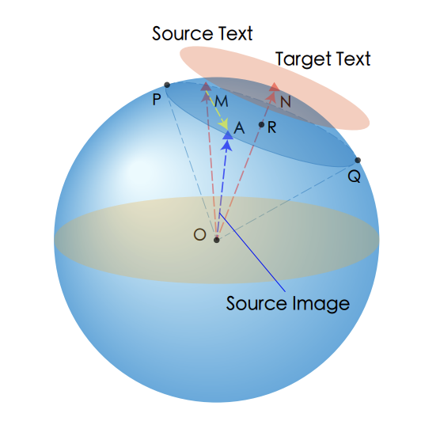
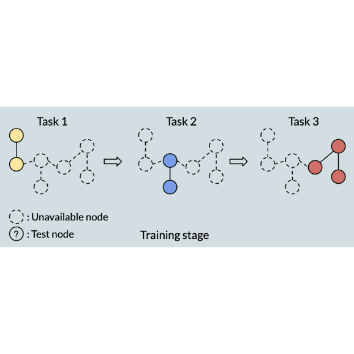

|
I am currently a PhD student at the University of Virginia, working with Dr. Sheng Li. Prior to that, I received my bachelor's degree in Electronic Engineering from Southeast University. I also spent time at Amazon Search Science & AI (Palo Alto, CA) with focus on image generation.Email: daiqing.qi at virginia.edu |
{kind=link}
|
I am interested in computer vision, image generation, multimodal learning (vision-language models), and machine learning (continual learning, federated learning). |
|
Ph.D., 2021 - now, University of Virginia B.Eng., 2016 - 2020, Southeast University |
|
Amazon, Search Science & AI (A9)
Applied Scientist Intern Palo Alto, CA
May 2023 - August 2023 |
|
|
|

|
Daiqing Qi, Handong Zhao, Sheng Li International Conference on Learning Representations (ICLR) 2023 code / arXiv Learn to perform stable generative replay on distributed data. |

|
Daiqing Qi, Handong Zhao, Sheng Li International Conference on Computer Vision (ICCV) 2023 (Under Review) Enable the pre-trained CLIP to explicitly capture visual details for fine-grained corss-modal retrieval. |
|  |
Daiqing Qi, Handong Zhao, Aidong Zhang, Sheng Li Neural Information Processing Systems (NeurIPS) 2023 (Under Review) Extend to unseen domains without visual and textual information about them. |
|  |
Daiqing Qi, Handong Zhao, Yun (Raymond) Fu, Sheng Li Neural Information Processing Systems (NeurIPS) 2023 (Under Review) Continual learning with graph data. |

|
Hengshiou Sheu, Zhixuan Chu, Daiqing Qi, Sheng Li IEEE Transactions on Neural Networks and Learning Systems (TNNLS) code / paper |

|
Yuncheng Hua, Yuanfang Li, Guilin Qi, Wei Wu, Jingyao Zhang, Daiqing Qi Journal of Web Semantics (JWS) code / arXiv |
|
Ronghang Zhu, Dongliang Guo, Daiqing Qi, Zhixuan Chu, Xiang Yu, Sheng Li |
|
Handong Zhao, Research Scientist at Adobe Research |
|
Program Committee Member / Reviewer: NeurIPS 2023, IEEE CIM, IEEE Big Data, IEEE TCSVT, AAAI-23 AI for Web Advertising Workshop |
|
CS 5012: Foundations of Computer Science (Fall 2022) DS 4002: Data Science Project Course (Spring 2023) |
|
My name is Daiqing Qi (祁岱青). I post some of my photographs on my Instagram and Gallery.
I play the Auto Battler game (a subgenre of strategy video games) and was among top 150 (ranked |

More photos are available here. |